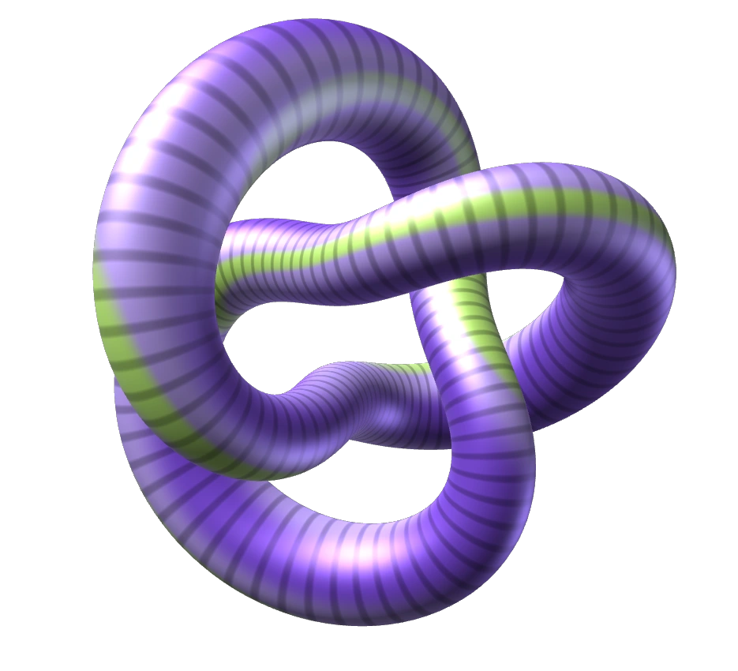

내가 풀고자 한 문제
설계용역사는 수주 전부터 견적을 내기 위해 고객의 요구를 정리합니다. 저는 팀장으로서 설계 조건이 바뀔 때마다 되풀이되는 수정과 검사에 주목했고, 설계자가 변경 근거를 확인할 수 있는 흐름을 팀의 개발 목표로 잡았습니다.
AI 도구를 만드는 wannabidr
저는 비개발자가 자기 일에 AI를 쓸 수 있도록 도구를 만듭니다. 지금은 기계설계자가 평소 쓰는 말로 설계를 바꾸고, 그 결과를 직접 검토할 수 있는 작업환경을 만들고 있습니다.
대표 작업 보기
어떤 일을 AI에 맡기고,
어떤 판단을 사람이 해야 할까?
“조금만 줄여 주세요.” 기계설계자에게 이 한마디는 여러 가지 일입니다. 어디를 줄일지 짚고, 건드리면 안 되는 치수를 찾고, 바꾼 부품이 주변 부품과 맞는지 확인해야 합니다.
저는 이런 요청을 만나면 사람이 정할 조건과 AI가 실행할 작업을 나눕니다. AI에 설계 도구와 검사 기준을 주고, 쓰는 사람이 무엇이 왜 달라졌는지 확인하고 다시 고칠 수 있도록 만듭니다.
기계설계자를 위한
AI 작업환경
설계자는 지켜야 할 체결 치수를 정하고, AI는 그 조건에 맞춰 브래킷의 폭을 고칩니다. 그다음에는 바뀐 부품이 주변 부품과 여전히 맞는지 검사합니다.
설계용역사는 수주 전부터 견적을 내기 위해 고객의 요구를 정리합니다. 저는 팀장으로서 설계 조건이 바뀔 때마다 되풀이되는 수정과 검사에 주목했고, 설계자가 변경 근거를 확인할 수 있는 흐름을 팀의 개발 목표로 잡았습니다.
공개 시연판은 한국어 요청을 모델링 계획과 편집 가능한 OpenSCAD 코드로 바꿉니다. 형상과 출력 가능성, 요청과의 일치를 검사합니다. 베어링 예제에서는 볼과 홈이 겹친다는 검사 결과를 바탕으로 볼 반지름을 줄여 오류를 해결했습니다.
두 스터디를 이끌며 언어 모델과 Cursor 같은 도구를 작업에 적용해 봤습니다. 이후에는 동료들과 에이전트 시장을 살피고, 서비스가 어떤 기반 기술 위에서 작동하는지 분석했습니다.
코드를 만드는 방식이 달라진 지금, 개발자는 무엇을 배우고 AI와 어떻게 함께 일할지 이야기했습니다.
“지금 AI를 어떻게 쓰고 있나요?”에서 시작해 “AI로 무엇을 만드나요?”를 물었습니다. AGI와 ASI에 관한 전망을 오늘 각자가 하는 일에 연결한 강연입니다.
근전도 기반 운동 분석 서비스의 앱과 서버 개발을 총괄했습니다. 지금은 해운물류 지식과 자연어 3D 모델링 등 서로 다른 분야에 에이전트를 적용하며 팀을 이끌고 있습니다.